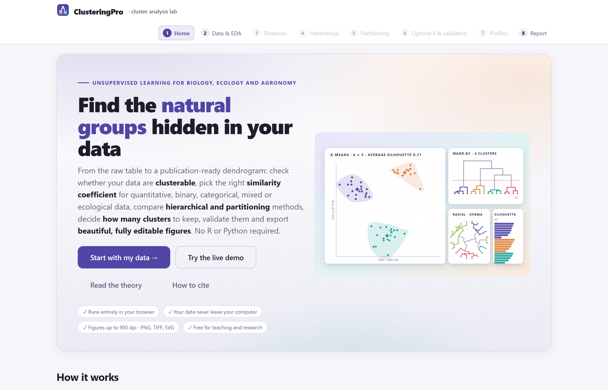
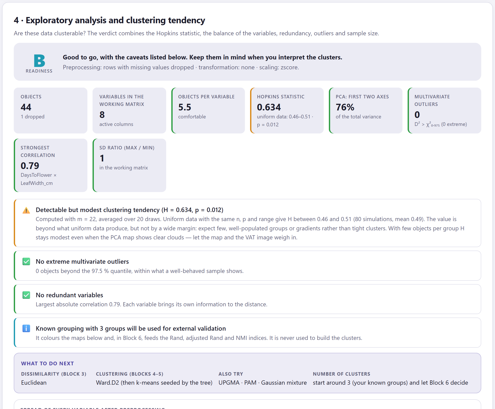
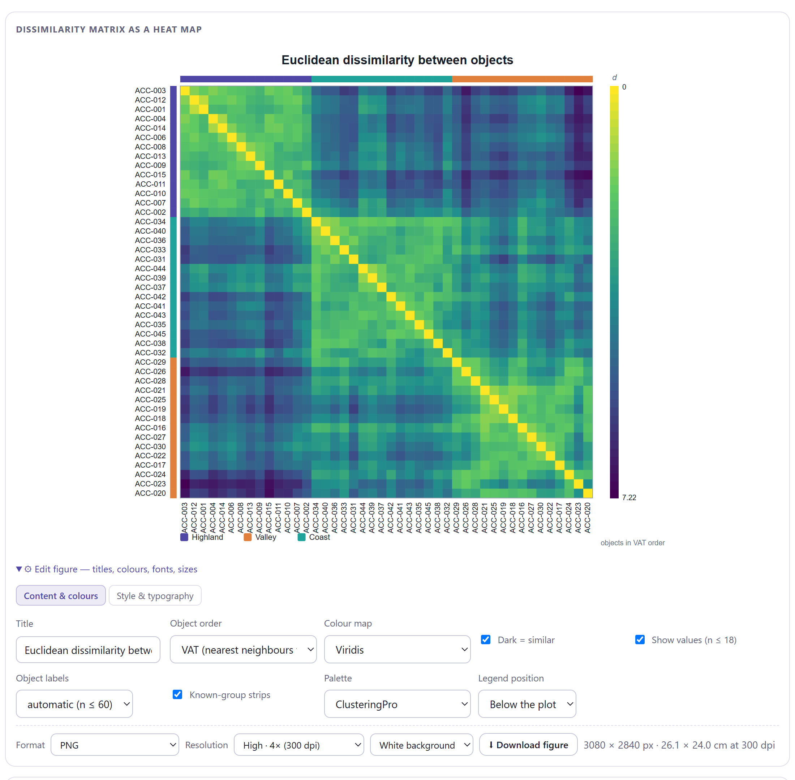
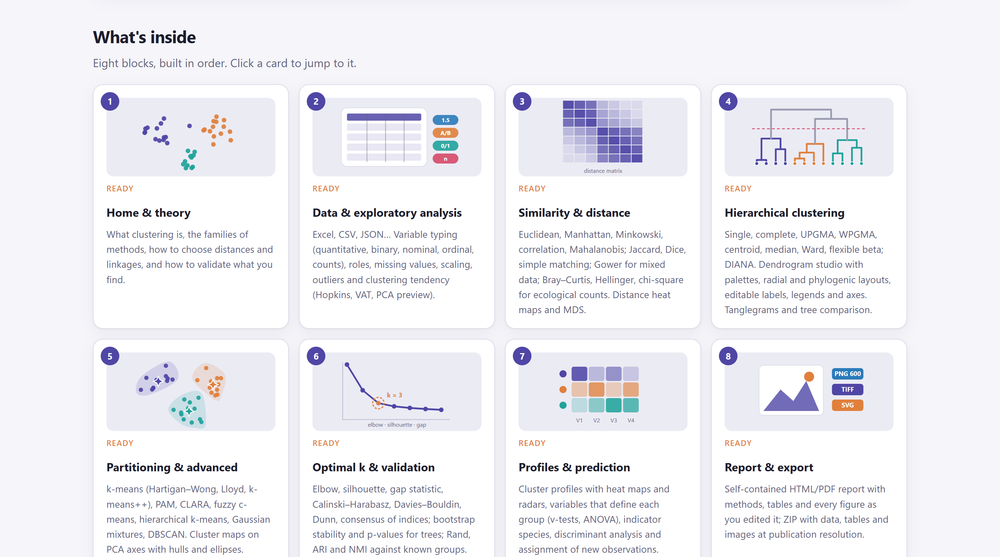

El identificador de objeto digital (DOI) 10.5281/zenodo.22682795 lleva siempre a la versión más reciente del programa; cada versión tiene además el suyo en el registro del archivo (la 1.0.1, por ejemplo, 10.5281/zenodo.22682889). Código fuente: https://github.com/luisangelbg/ClusteringPro · versión en línea: https://luisangelbg.github.io/ClusteringPro/
ClusteringPro funciona por completo dentro de tu navegador. Los archivos que abres se leen en tu computadora y nunca se envían a ningún servidor, ni siquiera cuando usas la versión en línea. Puedes analizar datos inéditos o sujetos a acuerdos de confidencialidad sin riesgo de que salgan de tu equipo.
Las ilustraciones, diagramas y capturas de pantalla de este manual son originales y se generaron con el propio programa o con código escrito para el manual. Los conjuntos de datos de ejemplo se describen en la sección 1.7: son simulaciones realistas creadas para enseñar, con nombres de accesiones, sitios y taxones inventados.
El manual sigue el mismo orden que la app: ocho bloques numerados que se recorren de izquierda a derecha en la barra superior. Cada capítulo explica un bloque, empieza con un poco de teoría fácil de digerir, describe lo que calcula y cómo leerlo, y termina con un ejemplo paso a paso usando los datos que ya vienen dentro del programa.
El color del bloque aparece en la apertura de su capítulo, en los números de sección, en los recuadros de teoría, en la pestaña del borde de la hoja y en el índice. Así sabes de un vistazo en qué parte de la app estás.
| Bloque | Nombre en la app | Qué hace |
|---|---|---|
| 1 | Home | Portada, demo interactivo, trece lecciones de teoría y cómo citar |
| 2 | Data & EDA | Carga del archivo, tipos y papeles de las variables, preprocesamiento y tendencia al agrupamiento |
| 3 | Distances | Coeficientes de similitud y distancia, diagnóstico de la matriz y comparación de coeficientes |
| 4 | Hierarchical | Diez reglas de enlace, corte del árbol, estudio de dendrogramas, mapas de calor y tanglegramas |
| 5 | Partitioning | k-means, PAM, CLARA, fuzzy c-means, mezclas gaussianas, DBSCAN y agrupamiento espectral |
| 6 | Optimal k & validation | Número de grupos, estabilidad, soporte de los nodos, validación externa y comparación de algoritmos |
| 7 | Profiles | Qué caracteriza a cada grupo, especies indicadoras, análisis discriminante y asignación de objetos nuevos |
| 8 | Report | Figuras para publicar, informe automático, párrafo de métodos y paquete ZIP |
Aclaraciones y consejos prácticos que ahorran tiempo.
Lo que puede cambiar tus conclusiones si se pasa por alto.
La idea detrás de un análisis, sin fórmulas innecesarias.
Un caso resuelto con los datos incluidos en el programa.
| Si el valor cae en este intervalo… | entonces esta es la lectura recomendada. |
Son guías para interpretar, no leyes: el conocimiento de tus objetos siempre manda.
| Así se escribe | Significa |
|---|---|
| Build the tree → | Un botón, casilla o menú de la app, con su texto en inglés tal como aparece en pantalla. |
| Edit figure›Style & typography | Una ruta: abre el primer elemento y luego el segundo. |
maize_landraces_morphology.csv | Un nombre de archivo, columna o valor que se escribe tal cual. |
| k, s(i), H, ARI | Parámetros e índices; su significado se explica la primera vez que aparecen. |
| ● ◐ — | Disponible · disponible en parte o con condiciones · no aplica. |
Qué es el programa, qué preguntas responde, qué datos acepta y cómo se recorre de principio a fin. Incluye las ideas básicas del análisis de agrupamientos que necesitas para aprovechar el resto del manual.
ClusteringPro es una plataforma para encontrar, validar e interpretar los grupos naturales que esconde una tabla de datos: recibe la tabla tal como sale del campo, del laboratorio o de la hoja de cálculo, comprueba si vale la pena agruparla, calcula la disimilitud adecuada a cada tipo de variable, construye árboles y particiones, decide cuántos grupos conservar, los valida, describe qué distingue a cada uno y entrega figuras e informes listos para publicar.
Todo ocurre dentro del navegador de internet. No hay que instalar nada, no se necesita saber programar y los datos no salen de la computadora. Los mismos pasos sirven para caracteres morfológicos de accesiones, tablas de presencia o abundancia de especies por sitio, perfiles de suelo con variables mezcladas, marcadores binarios o una matriz de distancias ya calculada, de modo que puedes usar un solo flujo de trabajo para todos los datos de un estudio.

1 2 3 4 5 6 7 8index.html o desde su dirección en línea. No requiere permisos de administrador ni conexión a internet.| Etapa | Lo que obtienes | Bloque |
|---|---|---|
| Entrada de datos | Lectura de hojas de cálculo (.xlsx, .xls, .ods), texto delimitado (.csv, .tsv, .txt), JSON, texto pegado del portapapeles y matrices de distancia ya calculadas; detección automática del tipo de cada variable. | 2 |
| Exploración | Faltantes, transformación y escalado; estadístico de Hopkins con su valor P, imagen VAT, mapa de componentes principales, atípicos multivariados, correlaciones y una calificación de A a D con recomendaciones. | 2 |
| Disimilitud | 39 coeficientes en seis familias; diagnóstico métrico y euclidiano de la matriz; mapa de calor, PCoA, diagrama de Shepard, red de vecinos y comparación de coeficientes. | 3 |
| Árboles | Diez reglas de enlace, correlación cofenética, corte por número de grupos o por altura, estudio de dendrogramas (rectangular, triangular, horizontal, radial), mapa de calor con árboles, tanglegramas. | 4 |
| Particiones | k-means (tres algoritmos), k-means jerárquico, PAM, CLARA, fuzzy c-means, mezclas gaussianas con BIC, DBSCAN y agrupamiento espectral; mapa de grupos con elipses, gráfico de silueta, membresías. | 5 |
| Número de grupos | Trece criterios que votan por un k (codo, silueta, gap, Calinski–Harabasz, Davies–Bouldin, Dunn y más), estabilidad por bootstrap, soporte AU/BP de los nodos, Rand ajustado, NMI y comparación de algoritmos. | 6 |
| Interpretación | Valores de prueba por variable, ANOVA y Kruskal–Wallis, categorías sobrerrepresentadas, especies indicadoras, análisis discriminante con validación cruzada, reglas de un árbol de clasificación y asignación de objetos nuevos. | 7 |
| Publicación | Figuras editables hasta 900 dpi (PNG, TIFF, SVG, JPG, WEBP), informe HTML completo con resumen ejecutivo y párrafo de métodos, impresión a PDF y paquete ZIP con datos, tablas y figuras. | 8 |
Para quien necesita clasificar objetos a partir de muchas variables y quiere resultados defendibles sin pelear con paquetes ni líneas de comando: estudiantes de licenciatura y posgrado que se inician en el análisis multivariado, investigadores en recursos fitogenéticos, ecología de comunidades, edafología y agronomía, mejoradores que caracterizan germoplasma, y docentes que necesitan mostrar en clase por qué dos reglas de enlace dan árboles distintos o cómo decide k-means. Cada resultado viene acompañado de un párrafo que lo interpreta en lenguaje llano, lo que convierte a la app también en una herramienta de enseñanza.
Un buen análisis empieza con una pregunta. La tabla siguiente traduce las preguntas más frecuentes de un estudio de agrupamientos al análisis que las responde y al bloque donde se encuentra.
| Pregunta | Análisis que la responde | Bloque |
|---|---|---|
| ¿Mi tabla está bien formada y mis variables bien tipificadas? | Revisión de la hoja, tipificación automática con corrección manual y papeles de las columnas | 2 |
| ¿Tiene sentido buscar grupos en estos datos? | Estadístico de Hopkins con valor P, imagen VAT y mapa de componentes principales | 2 |
| ¿Qué coeficiente de distancia debo usar con mis variables? | Recomendación por tipo de dato y comparación entre coeficientes candidatos | 2 3 |
| ¿Puedo usar Ward o k-means con esta distancia? | Diagnóstico de la matriz: desigualdad triangular y embebibilidad euclidiana | 3 |
| ¿Qué objetos se parecen más entre sí? | Mapa de calor ordenado, red de vecinos más cercanos y árbol jerárquico | 3 4 |
| ¿El dendrograma representa bien las distancias? | Correlación cofenética y coeficiente aglomerativo | 4 |
| ¿Cambia el árbol si cambio la regla de enlace? | Tabla de reglas, gamma de Baker y tanglegramas | 4 |
| ¿Qué método de partición conviene a mis datos? | Recomendación por tipo de dato y comparación de métodos con el mismo k | 5 |
| ¿Hay grupos de forma irregular o atípicos que no encajan? | DBSCAN (con ruido), agrupamiento espectral y PAM | 5 |
| ¿Cuántos grupos hay? | Trece criterios con voto de consenso, estadístico gap y BIC de las mezclas | 6 5 |
| ¿Los grupos son reales o un accidente de la muestra? | Estabilidad por bootstrap y soporte AU/BP de los nodos del árbol | 6 |
| ¿Coinciden los grupos con una clasificación previa? | Rand ajustado, NMI, pureza y prueba de χ² | 6 |
| ¿Qué variables distinguen a cada grupo? | Valores de prueba, ANOVA y Kruskal–Wallis por variable, mapa de calor de medias | 7 |
| ¿Qué especies indican cada grupo de sitios? | Valor indicador (IndVal) con prueba de permutación | 7 |
| ¿A qué grupo pertenece un objeto nuevo? | Análisis discriminante, centroide más cercano y reglas del árbol de clasificación | 7 |
| ¿Cómo reporto todo esto en un artículo? | Informe con resumen ejecutivo, párrafo de métodos, figuras vectoriales y paquete ZIP | 8 |
No necesitas un curso previo para usar la app, pero estas cinco ideas aparecen en todos los capítulos. Léelas una vez y regresa a ellas cuando lo necesites.
Agrupar es buscar conjuntos de objetos más parecidos entre sí que al resto. Nadie le dice al algoritmo qué grupos existen ni cuántos son; por eso se llama aprendizaje no supervisado, a diferencia de la clasificación, donde los grupos se conocen de antemano y lo que se aprende es a predecirlos. Casi todo lo que calcula ClusteringPro mide una de dos cosas: la compacidad de los grupos o la separación entre ellos.
Los algoritmos nunca ven tus variables: ven una matriz de disimilitudes entre pares de objetos. Cambiar el coeficiente cambia los grupos, así que esa elección importa más que la del algoritmo. Para variables cuantitativas la distancia euclidiana es el punto de partida; para presencia/ausencia se usan Jaccard o Dice, que no cuentan las ausencias compartidas; para abundancias, Bray–Curtis o Hellinger; para tablas con variables de varios tipos, Gower. Y cuando las unidades difieren hay que estandarizar antes, o la variable con los números más grandes decide sola los grupos.
Dos accesiones de maíz medidas en altura de planta y días a floración: A = (210 cm, 82 días) y B = (190 cm, 95 días). La distancia euclidiana en unidades originales es
√[(210 − 190)² + (82 − 95)²] = √(400 + 169) = 23.9
Si la altura se midiera en milímetros, el primer término valdría 40 000 y los días no contarían casi nada. Tras estandarizar cada variable (media 0, desviación 1) las dos diferencias pesan lo que valen en su propia escala, y la distancia pasa a ser un número sin unidades que se puede comparar entre pares.
Los métodos jerárquicos construyen un árbol de fusiones (o de divisiones) y no exigen decidir el número de grupos de antemano: se corta el dendrograma a la altura que convenga. Los métodos de partición, como k-means o PAM, reparten los objetos en un número k de grupos fijado por el usuario y los refinan hasta que nada cambia. A ellos se suman los métodos basados en densidad (DBSCAN), que encuentran grupos de cualquier forma y señalan el ruido, y los basados en modelos (mezclas gaussianas), que dan a cada objeto una probabilidad de pertenencia. ClusteringPro ofrece las cuatro familias y las herramientas para compararlas.
Cualquier algoritmo devuelve grupos, aunque no existan: k-means parte una sola nube en tres si se lo pides. Por eso el Bloque 2 pregunta primero si los datos tienen estructura (estadístico de Hopkins) y el Bloque 6 evalúa cada número de grupos con trece criterios distintos y cuenta sus votos. La silueta, el estadístico gap y la estabilidad por bootstrap son los tres que más pesan, pero la última palabra la tiene la interpretación: un grupo que no se puede describir en términos de las variables no sirve de mucho.
Un resultado de agrupamiento se defiende con tres piezas: una medida de calidad interna (la silueta media y, en los árboles, la correlación cofenética), una medida de estabilidad (qué tan a menudo reaparece cada grupo al remuestrear los objetos) y, si existe una clasificación previa, una medida de acuerdo externo (el índice de Rand ajustado). El Bloque 7 completa el trabajo describiendo qué variables, categorías o especies caracterizan a cada grupo, y el Bloque 8 lo reúne todo en un informe.
La primera decisión de cualquier agrupamiento es saber de qué clase son tus variables, porque de ello depende el coeficiente de disimilitud y, con él, los métodos que tienen sentido. ClusteringPro reconoce cinco tipos de variable, admite tablas que los mezclan y acepta también una matriz de distancias ya calculada.
| Tipo | Ejemplos | Coeficientes que propone la app | Cuidado con… |
|---|---|---|---|
| Cuantitativa | Altura, rendimiento, pH, expresión génica, medidas morfométricas | Euclidiana, Manhattan, Minkowski, Canberra, Mahalanobis, distancias de correlación, euclidiana sobre componentes principales | Unidades distintas sin estandarizar; atípicos que arrastran los centroides. |
| Binaria (0/1) | Presencia de especies, alelos, rasgos, síntomas | Jaccard, Dice–Sørensen, Ochiai, Kulczynski (asimétricos); simple matching, Rogers–Tanimoto (simétricos); Hamming, Yule | Usar un coeficiente simétrico cuando el 0 significa "no está": las ausencias compartidas inflan el parecido. |
| Nominal | Cultivar, tipo de suelo, color, región | Simple matching de categorías, Gower | Códigos numéricos de categorías tratados como cantidades. |
| Ordinal | Escalas de daño, calificaciones, clases de tamaño | Manhattan sobre rangos normalizados, Gower | El orden de los niveles: revísalo en el Bloque 2 (la app lo propone y se puede corregir). |
| Conteos y abundancias | Tablas especie × sitio, OTU, capturas | Bray–Curtis, Ružička, Kulczynski, Morisita–Horn, Hellinger, chord, ji cuadrada, Canberra, Jaccard sobre presencia | La euclidiana bruta: la dominan las especies abundantes y los dobles ceros. |
| Mixta | Cualquier combinación de las anteriores en una tabla | Gower con pesos; euclidiana sobre la matriz con variables indicadoras | Suponer que un solo tipo de coeficiente sirve para toda la tabla. |
| Matriz de distancias | Distancias genéticas, geográficas o de expertos ya calculadas | Se usa tal cual, con su raíz cuadrada o su cuadrado | Una matriz no euclidiana con Ward o k-means: la app lo detecta y sugiere √d. |
Declarar mal el tipo de una variable cambia los resultados. Una columna de códigos de región (1, 2, 3) leída como cuantitativa haría que la región 3 quedara "más lejos" de la 1 que de la 2 sin ningún motivo. El Bloque 2 detecta el tipo automáticamente, pero siempre te muestra lo que supuso y te permite corregirlo antes de calcular nada.
index.html | La app. Ábrela con doble clic. |
Open ClusteringPro.bat | Arranque opcional con servidor local. |
js/, css/ | El código del programa. |
data/ | Los archivos de ejemplo. |
vendor/ | Componentes de terceros y sus licencias. |
manual/ | Este manual. |
ClusteringPro completa a tu computadora, por ejemplo a Documentos. No separes index.html del resto de las carpetas.index.html. Se abrirá en tu navegador predeterminado con la portada del Bloque 1.La misma app está publicada en https://luisangelbg.github.io/ClusteringPro/. Sirve para usarla desde cualquier equipo sin copiar nada y siempre corresponde a la versión más reciente. También ahí el cálculo ocurre en tu navegador: la página es estática y tus archivos nunca se suben a ningún sitio.
Con doble clic todo funciona, incluidos los siete ejemplos: vienen incrustados en la app y no hace falta leerlos de la carpeta data/, que los conserva como archivos CSV para que veas cómo están acomodados. Open ClusteringPro.bat es una alternativa: inicia un pequeño servidor en tu propia computadora (dirección http://localhost:8900) y abre la app desde ahí. Úsalo si tu navegador restringe las páginas abiertas como archivo local, o para abrir la app desde una tableta de la misma red. Sigue sin enviarse nada a internet.
La app guarda en tu navegador las preferencias de estilo de las figuras. Si cambias de navegador o borras los datos de navegación, esas preferencias se pierden, pero tus archivos originales no se modifican nunca. Los resultados de un análisis no se guardan solos: descárgalos desde el Bloque 8 antes de cerrar la pestaña.
Todos los bloques de análisis comparten la misma organización, así que basta aprenderla una vez. De arriba abajo, cada bloque tiene cuatro partes:
| Parte | Qué contiene | Cómo aparece en pantalla |
|---|---|---|
| Teoría | Un recuadro desplegable con la parte de la teoría que importa en ese paso, con figuras. | Una tarjeta con acordeones numerados al inicio del bloque |
| 1 · Ajustes | Una recomendación calculada a partir de tus datos, las opciones del análisis con valores predeterminados sensatos y un botón para calcular. | Recommendation · Compute …, Build …, Run → |
| 2 · Resultados y diagnóstico | Casillas con los valores principales, una lista de comprobaciones con semáforo (verde, ámbar, rojo) que interpreta los resultados en lenguaje llano, y tablas descargables. | Casillas de cifras · comprobaciones con ✅ ⚠️ ⛔ ℹ️ |
| 3 · Figuras y comparaciones | Figuras editables con controles de estilo y exportación; en la mayoría de los bloques, una tarjeta final que compara alternativas (coeficientes, reglas de enlace, métodos). | Edit figure · Download figure · Compare |
Términos de la interfaz. La app está en inglés, el idioma de las revistas científicas. La tabla 1.3 reúne los términos que verás en todos los bloques.
| En la app | En español | En la app | En español |
|---|---|---|---|
| Object · Variable | Objeto (fila) · variable (columna) | Edit figure | Editar figura |
| Dissimilarity · Distance | Disimilitud · distancia | Content & colours | Contenido y colores |
| Linkage | Regla de enlace del árbol | Style & typography | Estilo y tipografía |
| Cut · Cluster | Corte del árbol · grupo | Palette | Paleta de colores |
| Known grouping | Agrupación conocida (para validar, nunca para agrupar) | Legend position | Posición de la leyenda |
| Silhouette | Silueta (calidad de la partición) | Resolution | Resolución |
| Random seed | Semilla aleatoria | Download | Descargar |
| Continue to … | Continuar a… | How to cite | Cómo citar |


1 2 3 4 5 6Varios análisis dependen del azar: los arranques de k-means, las muestras de CLARA, los conjuntos de referencia del estadístico gap, los remuestreos de la estabilidad y las permutaciones de las especies indicadoras. La Random seed fija ese azar: con la misma semilla y los mismos datos obtendrás exactamente los mismos resultados. Anota la semilla en la sección de métodos de tu artículo para que otros puedan reproducirlos; el informe del Bloque 8 la incluye por ti.
El programa incluye siete conjuntos de datos listos para usar, uno por cada tipo de tabla que acepta. Cinco vienen como archivos en la carpeta data/ y dos se generan al momento dentro de la app. Los capítulos de cada bloque los usan en sus ejemplos paso a paso.
| Botón en la app | Tipo | Contenido | Ideal para practicar |
|---|---|---|---|
| Quantitative · maize landraces | Cuantitativo | 45 accesiones de maíz × 8 caracteres morfológicos (altura de planta y de mazorca, días a floración, longitud de mazorca, hileras, peso de grano, rendimiento, ancho de hoja), con la región de origen como agrupación conocida y un valor faltante sembrado. | Todo el flujo: euclidiana, Ward, k-means, k óptimo, perfiles, discriminante |
| Binary · plant species presence | Binario | 30 sitios × 22 especies en presencia/ausencia, con el hábitat de cada sitio. | Jaccard frente a simple matching, UPGMA, PAM |
| Counts · insect abundance | Conteos | 24 sitios × 14 taxones de insectos capturados, con el tipo de paisaje. | Bray–Curtis y Hellinger, PAM, especies indicadoras |
| Mixed · soil profiles | Mixto | 36 perfiles de suelo con variables cuantitativas (pH, materia orgánica, arcilla, arena, CIC, pendiente), una nominal (textura), una ordinal (drenaje) y una binaria (calcáreo). | Gower, PAM, perfiles con variables categóricas |
| Distance matrix · 12 cultivars | Matriz | Una matriz de distancias genéticas entre 12 cultivares, ya calculada, como la que entrega un programa de marcadores. | Entrada directa de una matriz, √d, árboles y PAM |
| Simulated · four clear clusters | Cuantitativo | 80 objetos × 5 variables generados al momento con cuatro grupos bien separados. | Ver cómo se comportan los criterios de k cuando la respuesta es evidente |
| Simulated · uniform noise | Cuantitativo | 60 objetos sin ninguna estructura, generados al momento. | Ver qué aspecto tiene un Hopkins de 0.5 y por qué no hay que agrupar cualquier cosa |

Los siete conjuntos se crearon para enseñar: son simulaciones realistas con nombres de accesiones, sitios y taxones inventados, diseñadas para que cada tipo de tabla muestre lo que la app puede hacer con él. No describen materiales reales y no deben citarse como datos experimentales.
Los bloques están ordenados como se hace un análisis: primero se revisa si vale la pena agrupar, luego se elige cómo medir el parecido, después se agrupa de dos maneras distintas, se decide cuántos grupos conservar y se validan, y al final se interpretan y se publican. Cada tipo de dato recorre ese camino con pequeñas diferencias, como líneas de metro que se detienen en casi todas las estaciones.
| Tipo | 3 | 4 | 5 | 6 | 7 | Condiciones |
|---|---|---|---|---|---|---|
| Cuantitativo | ● | ● | ● | ● | ● | Todo disponible. Ward y k-means son la ruta natural si la distancia es euclidiana. |
| Binario | ● | ● | ◐ | ● | ◐ | k-means, fuzzy y mezclas trabajan sobre los ejes PCoA de la disimilitud (la app lo propone sola); PAM usa la matriz directamente. Los perfiles tratan cada columna 0/1 como una variable; con especies, mejor el valor indicador. |
| Categórico | ● | ● | ◐ | ◐ | ◐ | Como el binario en el Bloque 5. Sin variables cuantitativas no hay soporte AU/BP de los nodos ni análisis discriminante; sí valores de prueba de las categorías y reglas. |
| Abundancias | ● | ● | ◐ | ● | ● | Bray–Curtis no es euclidiana: Ward y k-means solo sobre ejes PCoA o tras la transformación de Hellinger; PAM sin restricciones. Especies indicadoras disponibles. |
| Mixto | ● | ● | ◐ | ◐ | ● | Gower con PAM es la ruta natural; los métodos de coordenadas usan los ejes PCoA. El soporte AU/BP remuestrea solo las variables numéricas. |
| Matriz de distancias | ● | ● | ◐ | ◐ | — | Se salta la exploración por variables. Sin variables no hay perfiles ni AU/BP; k-means trabaja sobre las coordenadas de la matriz. Todo lo demás está disponible. |
| Situación | Lectura | Qué hacer |
|---|---|---|
| Al menos 5 a 10 objetos por grupo esperado | Adecuado | Los criterios de k, la silueta y el remuestreo son informativos. Con 30 objetos y 3 grupos esperados ya se trabaja bien. |
| Menos de 5 objetos por grupo | Limitado | Los grupos pequeños se disuelven al remuestrear y cualquier atípico forma su propio grupo. Interpreta el árbol, no la partición. |
| Más variables que objetos | Cautela | Las distancias se parecen todas entre sí. Elimina variables redundantes o agrupa sobre los primeros componentes principales (Bloque 3). |
| Variables irrelevantes para la pregunta | Riesgo | Cada variable de "ruido" diluye la estructura que traen las útiles. Déjalas como suplementarias: no se usan para agrupar, pero sí para describir los grupos. |
La app marca en el Bloque 2 la razón objetos/variables y en el Bloque 5 los grupos con menos de tres objetos.
Aunque puedes saltar entre bloques, hay dos paradas que no conviene omitir. La primera es el veredicto del Bloque 2: si el estadístico de Hopkins dice que los datos son uniformes, todo lo que sigue describirá grupos que no existen. La segunda es el Bloque 6: el árbol del Bloque 4 y la partición del Bloque 5 se cortan con un número de grupos provisional, y el Bloque 6 es donde ese número se somete a los trece criterios y a la estabilidad. Con el botón Adopt k el número elegido regresa a los Bloques 4 y 5 para rehacer el corte.
Tres clases de números aparecen una y otra vez en la app: índices de calidad acotados entre −1 y 1 o entre 0 y 1 (la silueta, la correlación cofenética, el índice de Rand ajustado), valores P de pruebas de permutación o de Monte Carlo (Hopkins, especies indicadoras, χ²) y coeficientes de variación explicada. Entenderlos evita las dos equivocaciones más comunes: tomar un índice moderado por un buen resultado y creer que un valor P significativo garantiza que los grupos son útiles.
Para cada objeto, s(i) compara su distancia media a los compañeros de grupo (a) con su distancia media al grupo vecino más cercano (b): s = (b − a) / max(a, b). Vale casi 1 cuando el objeto está bien colocado, cerca de 0 cuando está entre dos grupos y es negativa cuando probablemente pertenece a otro. La silueta media de la partición resume todo en un número.
Un dendrograma resume la matriz de distancias: la altura a la que dos objetos se unen por primera vez es su distancia cofenética. La correlación entre esas alturas y las distancias originales mide qué tan fiel es el árbol. Por encima de 0.75 se puede leer el dendrograma con confianza; por debajo de 0.6 conviene cambiar la regla de enlace o el coeficiente.
| Silueta media | Estructura | Cómo redactarlo |
|---|---|---|
| 0.71 a 1.00 | Fuerte | "Se encontró una estructura de grupos fuerte y bien separada". |
| 0.51 a 0.70 | Razonable | "La partición es clara, con algunos objetos cerca de los límites". |
| 0.26 a 0.50 | Débil | "Los grupos se traslapan; la partición es exploratoria". Compruébala con la estabilidad del Bloque 6. |
| ≤ 0.25 | Sin estructura sustancial | No afirmes que hay grupos. Prueba otro coeficiente, otro método u otro número de grupos, o acepta que los datos forman un gradiente. |
Los umbrales son los de Kaufman y Rousseeuw (1990). En datos biológicos reales, con muchas variables, una silueta de 0.4 ya suele acompañar a grupos interpretables.
Es la probabilidad de observar un resultado tan extremo como el tuyo si en realidad no hubiera efecto. Un P = 0.012 en el estadístico de Hopkins dice que, si los datos fueran uniformes, un valor de H tan alto ocurriría 12 veces de cada 1000 por azar. En la app casi todos los valores P vienen de permutaciones o de simulaciones, así que dependen de la semilla y del número de réplicas.
Compara dos maneras de agrupar los mismos objetos, por ejemplo tus grupos y una clasificación previa. Vale 1 cuando coinciden exactamente y 0 cuando coinciden lo que coincidirían dos etiquetados al azar; puede ser negativo. Por encima de 0.7 las dos particiones cuentan la misma historia; entre 0.4 y 0.7 comparten un núcleo; por debajo, poco tienen que ver.
Las variables que se usaron para construir los grupos siempre difieren "significativamente" entre ellos: los grupos se hicieron precisamente para eso. Por eso los valores P del Bloque 7 son descriptivos cuando se refieren a las variables activas, y solo tienen valor de prueba con las variables suplementarias, que no intervinieron en el agrupamiento. Reporta siempre el tamaño del efecto (la silueta, la diferencia de medias, el valor indicador) junto con el valor P.